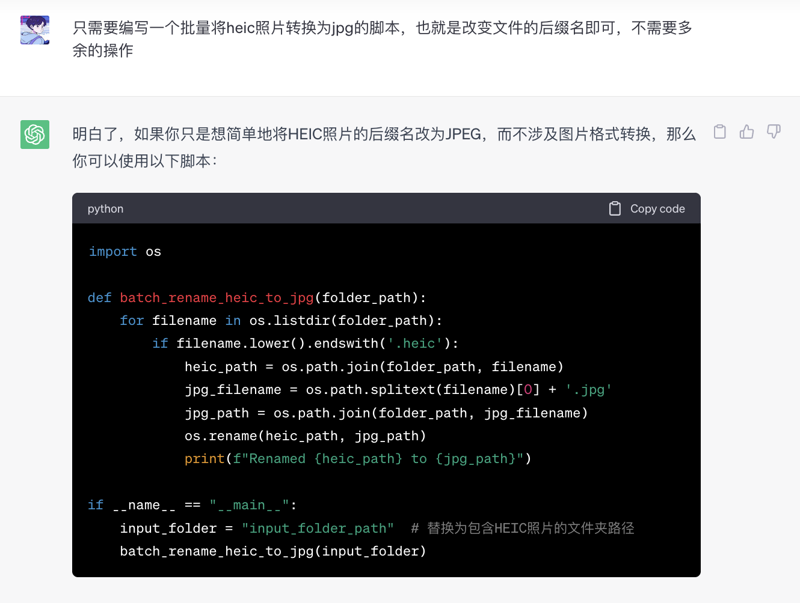

在日常生活学习中碰到问题解决问题的一些小技巧，不一定具有时效性，但是解决问题的办法是千方百计的，解决问题的思路也一定要足够灵活，收录一些日常碰到的问题并进行解决的办法希望能提供给您一些想法。
PDF删除部分页
有一次偶然碰到了需要删除PDF中的部分页，本来想着打开浏览器搜索解决一番，灵机一动想起来打印东西的时候有选择页码打印这一功能，于是解决办法有了：
- 直接将该PDF打开进入打印（Command + P）模式，选择性打印我们想要的页码然后另存为PDF即可
当然如果有更多的需要的话，那可能的解决办法有下：
- Google一下可能有工具类的网页服务
- WPS有类似的会员服务
- …
关注作者阅读全文
-
如果是CSDN就直接安装插件了，这类大众问题一般网上都有解决方案
-
腾讯云上的文章也需要的时候
heic照片转JPG
自己手机上拍的会议照片要发给老师的时候，手机默认是heic格式的照片文件，不知道在他人电脑版本上是否能打开，老师最后还是要求JPG文件。
某个转换网站只支持一次60张免费转换额度，但我有将近一百张照片需要转换，想了下应该改变一下后缀名就能解决问题，测试了下发现图片效果并无影响。于是打算将所有照片后缀由heic改成jpg结尾，批量修改的代码还是不难写的，用ChatGPT很快搞定：
